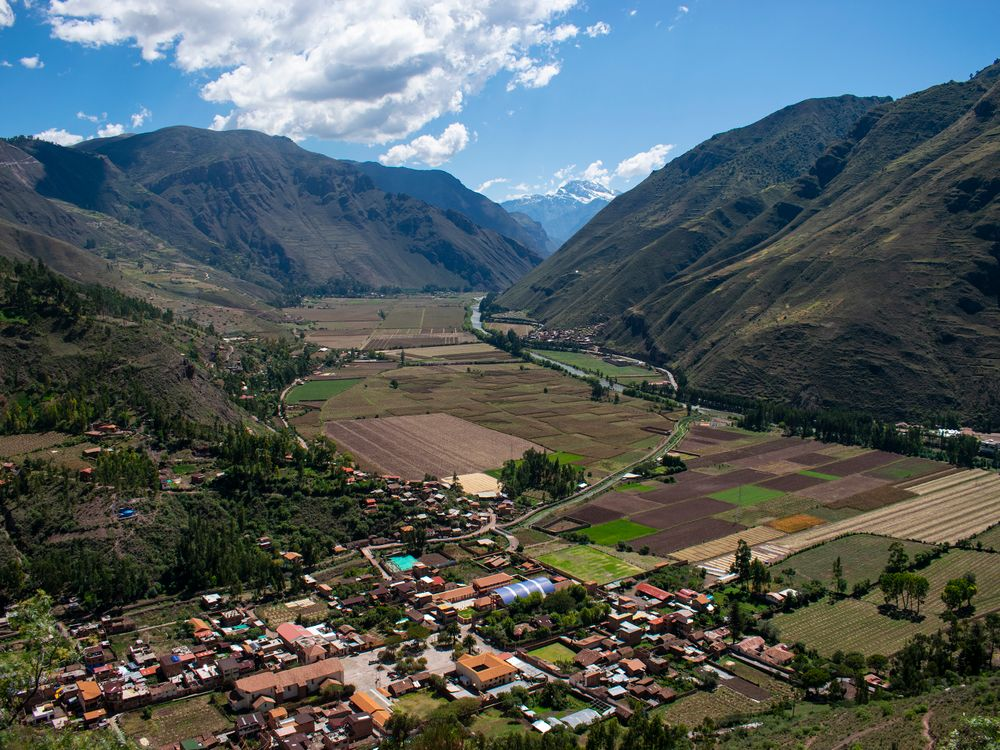
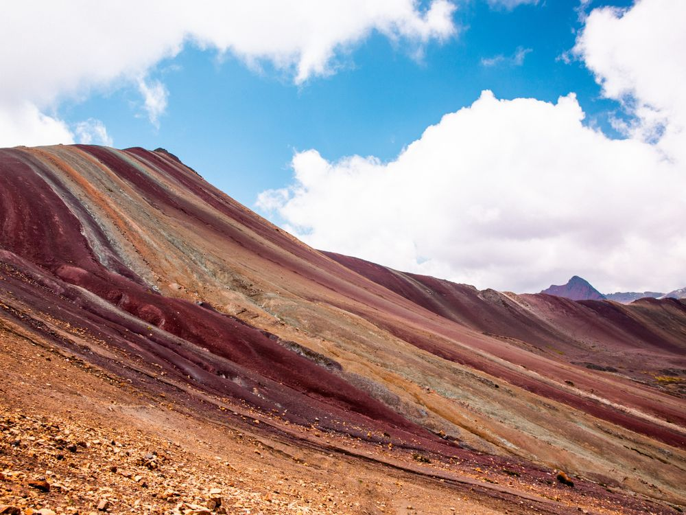

Sacred Valley & Machu Picchu
11 days · 3–13 May 2027 · from £2,690
The idea
The mistake people make in Peru is arriving at 3,400m and starting immediately. This trip spends its first four days low and slow, in the Sacred Valley rather than Cusco, which is both more pleasant and several hundred metres lower.
By the time we start the trek everyone has acclimatised properly, and we arrive at Machu Picchu on foot through the Sun Gate rather than on the bus from Aguas Calientes.
This is the hardest trip I run. Four days of trekking, a pass at 4,600m, and camping at altitude. Ask me if you're unsure — I'd rather be straight with you now.


Day by day
-
1
Arrive Cusco, straight to the valley
Met at the airport and driven down to Urubamba, 600m lower. The single most useful thing you can do on day one.
-
2
Settling in
A gentle walk, a lot of water, and an early night. Coca tea whether you like it or not.
-
3
Písac and the market
The terraces above Písac in the morning, the market below in the afternoon.
-
4
Ollantaytambo
The fortress and the Inca town that's still laid out exactly as it was built.
-
5
Rainbow Mountain
An early start and a real altitude test at 5,000m. If you're fine here, you're fine for the trek.
-
6
Cusco, and a rest day
Up to the city properly, San Blas, and nothing scheduled after lunch.
-
7
Trek day one
Into the Salkantay valley. Six hours, mostly gradual, camp beneath the glacier.
-
8
Trek day two — the pass
The hardest day: up to 4,600m in the morning, then a long descent into cloud forest. The weather changes twice.
-
9
Trek day three
Down through coffee country to the river, and a hot spring at the end of it.
-
10
Machu Picchu
Up before dawn and in through the Sun Gate as it opens. A guided circuit, then the train back down the valley.
-
11
Home
Transfers to Cusco airport for onward flights.
What's included
In the price
- 10 nights — 6 in guesthouses, 3 camping, 1 in Aguas Calientes
- All ground transport, plus the return train from Machu Picchu
- Machu Picchu entry, Sun Gate circuit and guide
- Trekking crew, cook, tents and porters for group kit
- All meals on trek; breakfast daily elsewhere plus 5 dinners
- Me, for the whole trip
Not in the price
- International flights to and from Cusco
- Travel insurance — must cover trekking to 5,000m
- Sleeping bag hire, if you'd rather not bring one
- Meals not listed above, and drinks
- Optional single room supplement (guesthouses only)